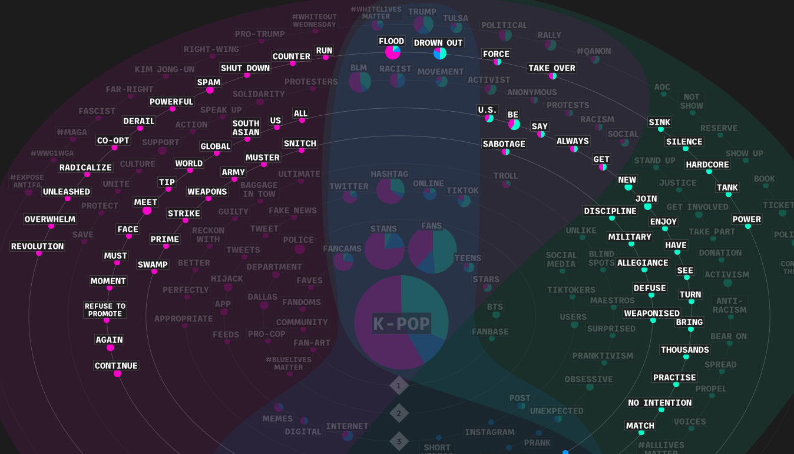
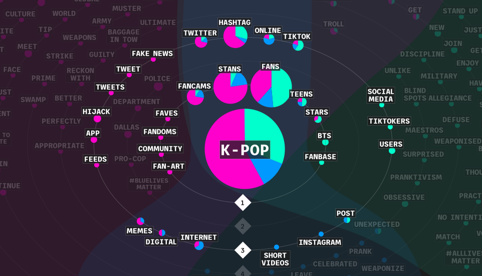
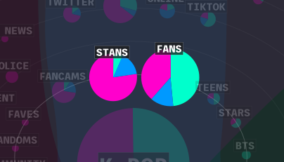
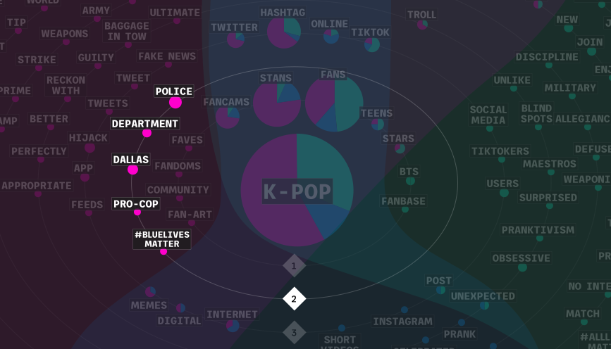
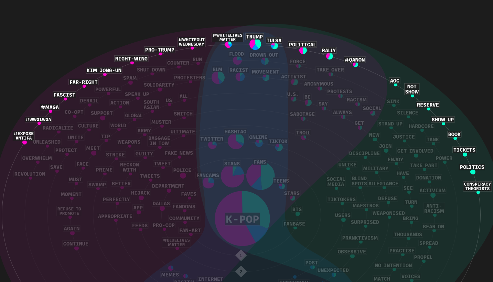
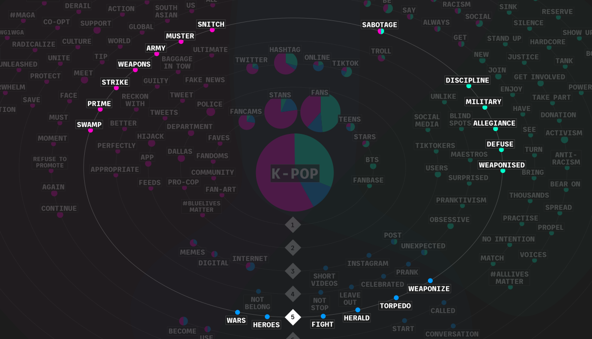

The phenomenon of digital activism carried out by K-pop stans to support BLM and sabotage Trump’s rallies did not go unnoticed: the main online news websites covered their actions with critique pieces, describing this group as a force of social and political action, and acknowledging their power given by the internet used as a weapon.
The main finding of this protocol lays in the difference between the terms used to describe the collective actions in entertainment magazines and newspapers online. Hard news in fact generally prefer more neutral and broad terms, as opposed to soft news, which instead use a more powerful and aggressive lexicon. 
Another difference among soft and hard newspapers lays in the fact that the former uses several words specific to online communities, such as “fancams”, “hashtag”, “memes” or “hijack”, while the latter portray activism and collective actions with more generic terms, like “social media”, “users” or “BTS”, that can be understood by a broader audience. 
In the articles the verb "flood", normally used to describe natural disasters, always refers to terms related to the social world and to specific hijacked hashtags. The various media have referred to the same groups using different terms. Entertainment websites (soft news) preferred the word "stans", while more serious newspapers mostly used "fans", a less accurate yet more widely known term. 
Even though several of the articles taken in consideration for this protocol refer to the hijackings related to the BLM protest, only soft news magazines describe in their titles the involvement of the Police Department. 
For what concerns terms related to politcs, hard news mostly referred to Trump's Tulsa rally, while entertainment magazines used more sided terms, like "fascist", "far-right", "right-wing", referring to the hijacked hashtags. Trump is the person who was mentioned the most and the only one mentioned by all three types of websites; Kim Jong-un and Alexandria Ocasio-Cortez also appeared. 
Nonetheless, despite the differences in the lexicon used by the three types of newspapers, all of them describe stan actions using both terms extracted from the war imaginary and military world, like “weapon”, “war”, “allegiance”, “army”, etc. and several of their derivations. 